images ―
As the 2nd tallest mountain in the world, K2 stands as a breathtaking demonstration of nature
- both literally and figuratively; an enchanting facade cloaking a realm of treachery.
Below is an image gallery showing off photos related to K2. Hover over for extra information.
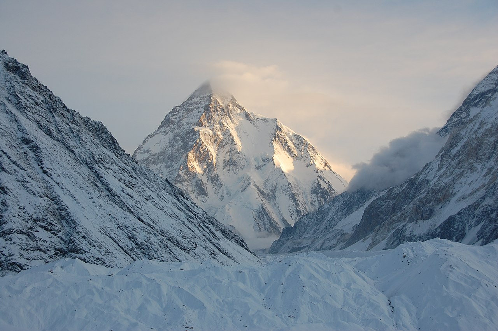
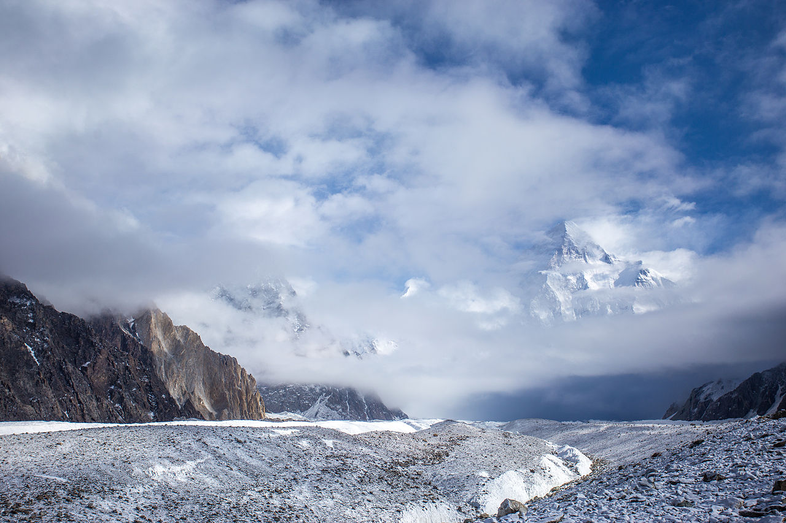
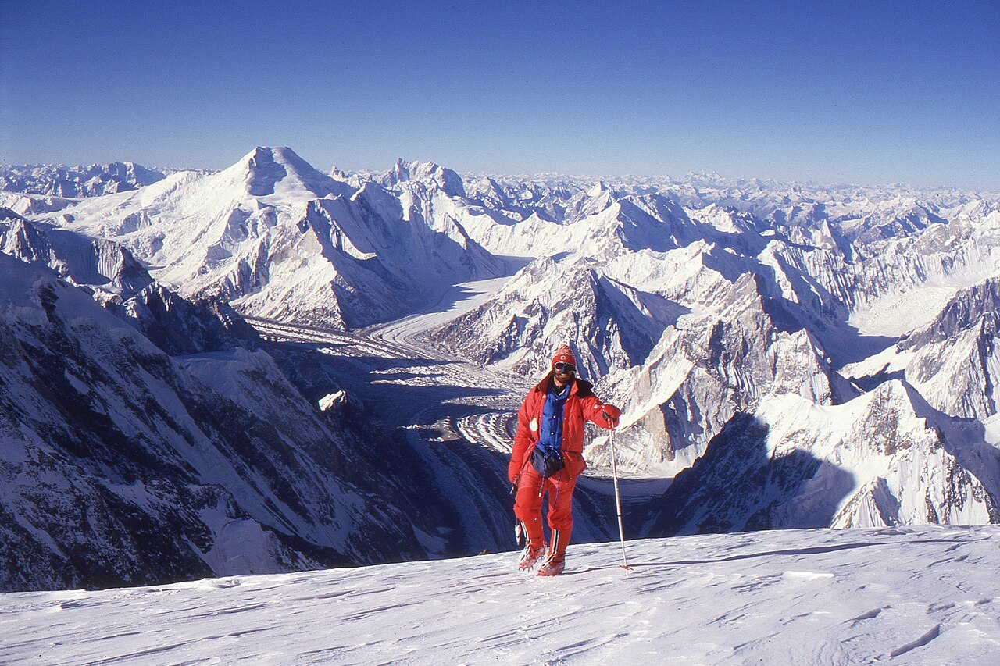
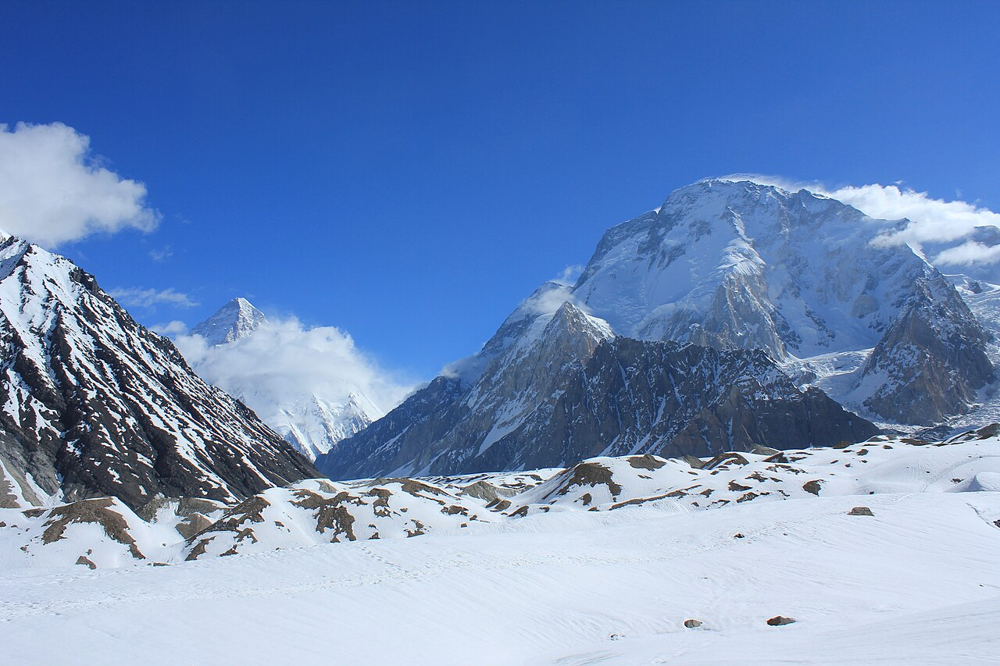
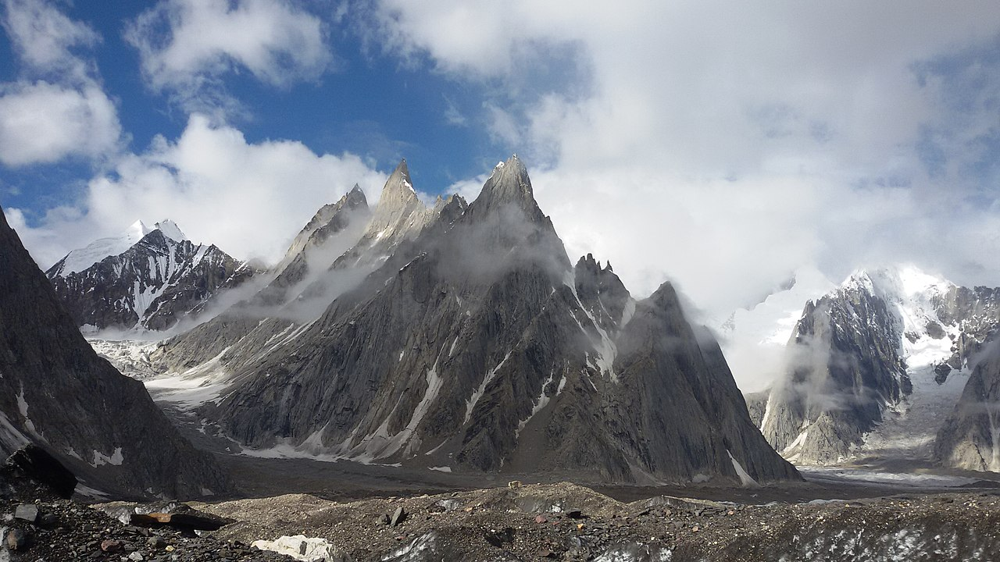
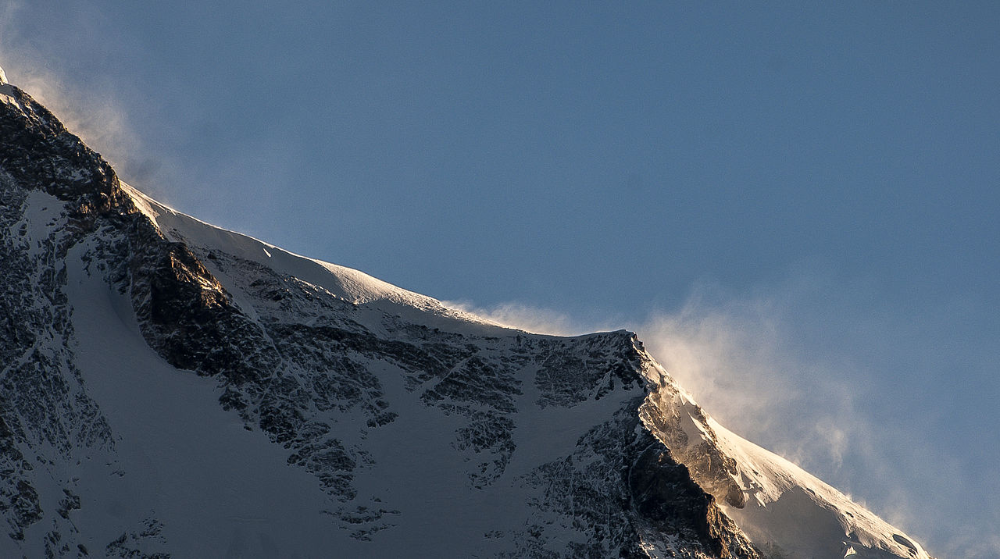
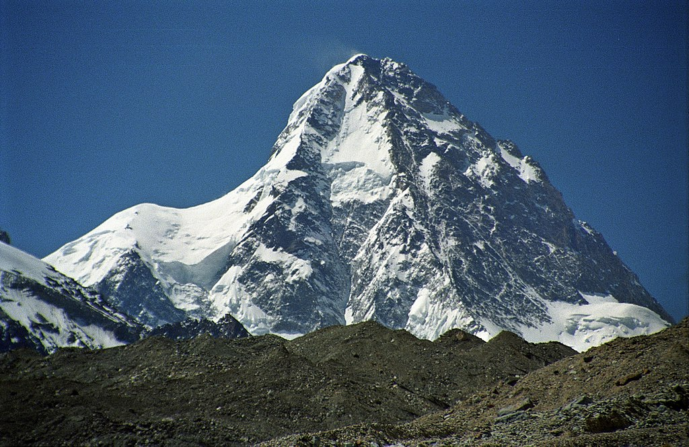
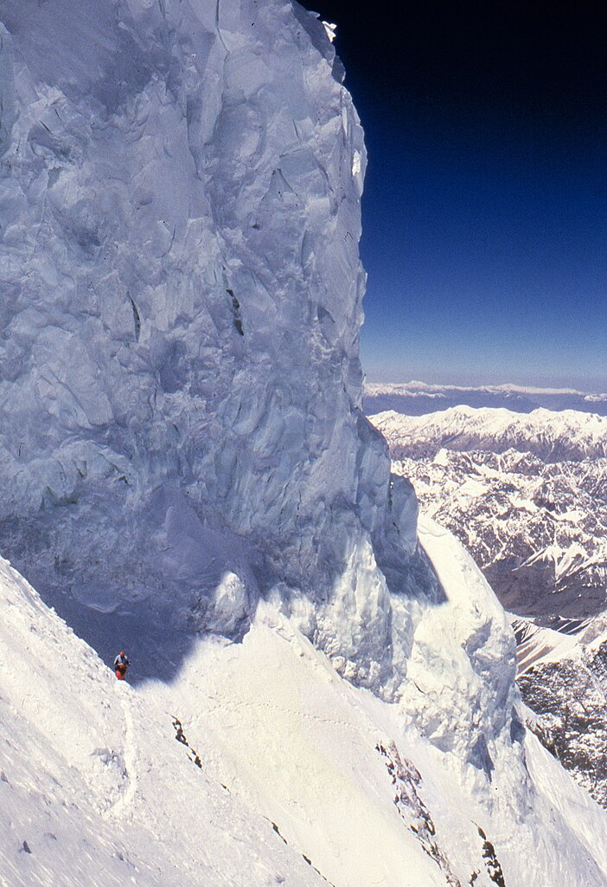
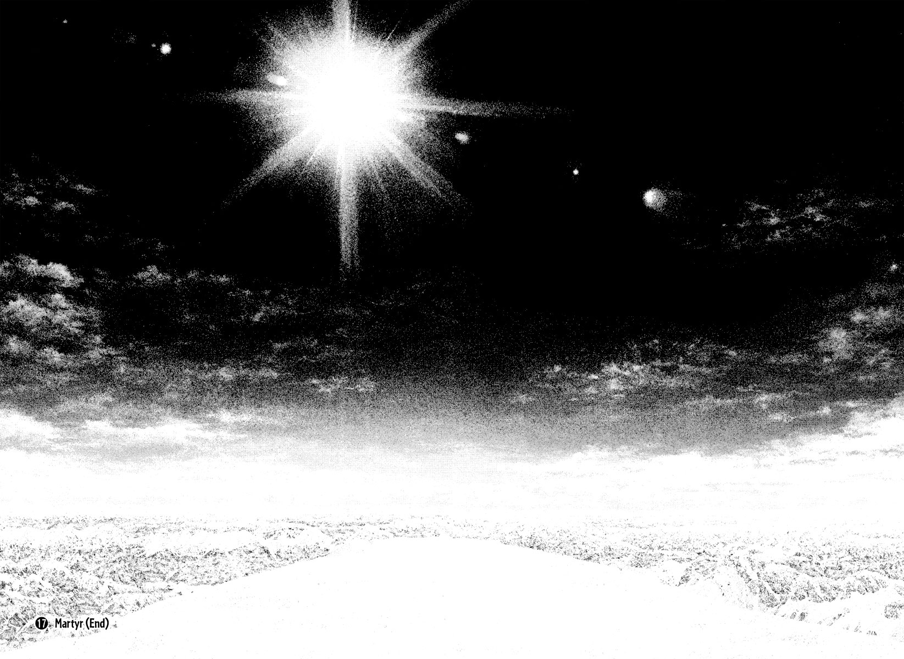
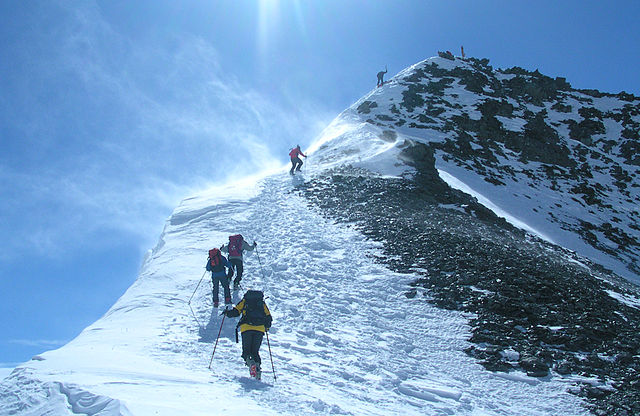
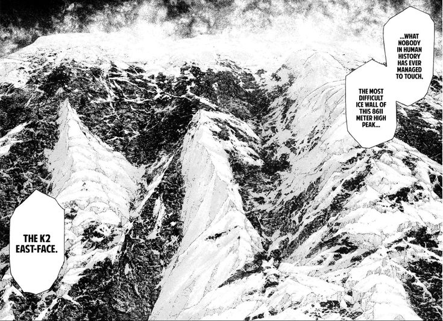
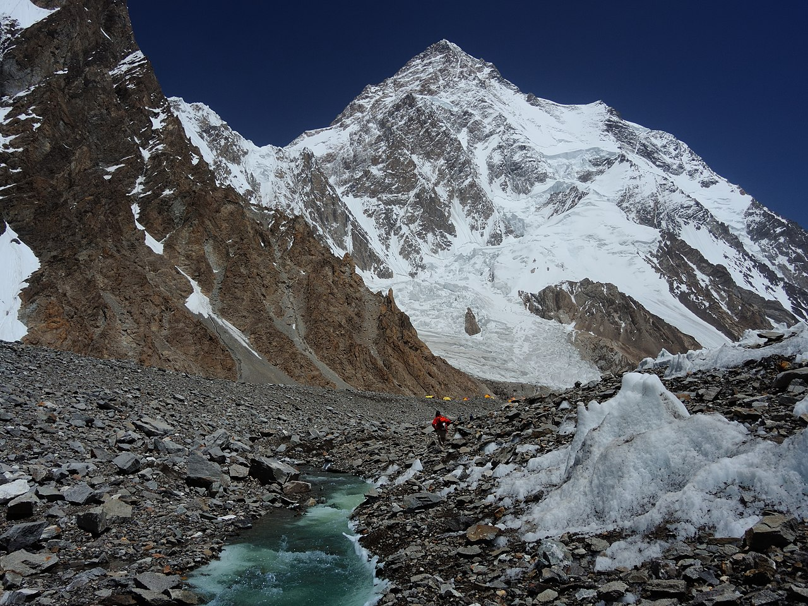
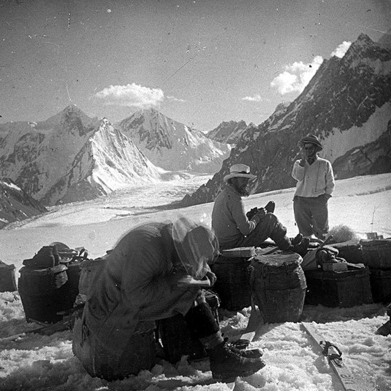
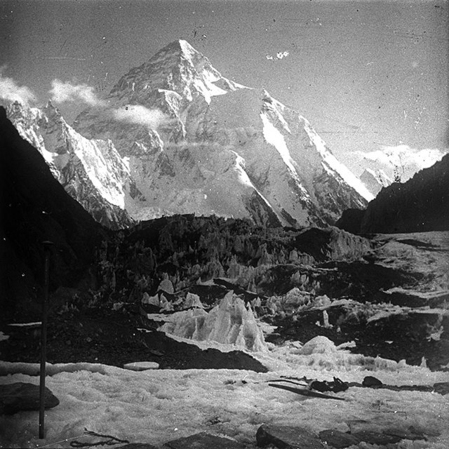